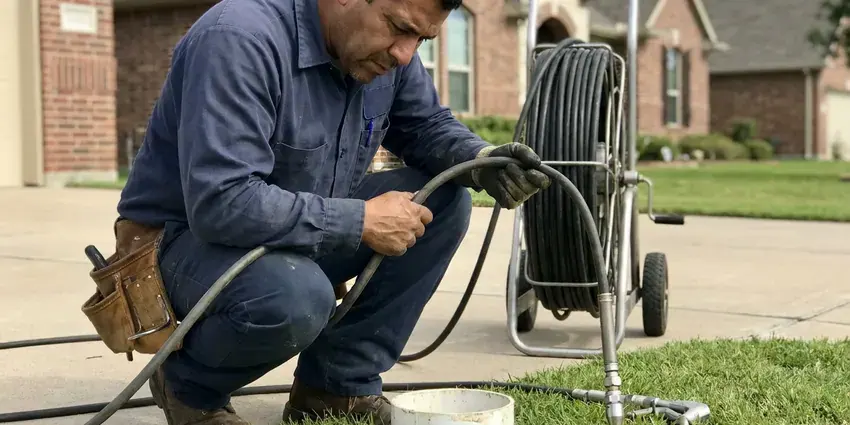

Water Line Repair in Kendale Lakes, FL
When your water line fails in Kendale Lakes, FL, you need a crew that locates the leak precisely and restores clean water the same day.
- Licensed plumbers
- Trenchless Options Offered
- Upfront Written Quotes
- Prompt, reliable service

Trusted Water Line Repair Services Available in Kendale Lakes, FL.
Our team is ready to diagnose and fix your water line issues quickly and correctly.
Your First Call for Water Line Repair in Kendale Lakes, FL
At HDF Plumbing, we specialize in complete water line repair for homes and businesses across Kendale Lakes, FL. We diagnose the root cause of the problem and put in place effective solutions, so your water supply is secure and efficient.
Our expertise includes:
- Long-lasting pipe material replacements
- Copper, PEX and HDPE service line replacement to the meter
- Trenchless repair options

Additional Plumbing Maintenance Services in Kendale Lakes, FL
Our maintenance and specialty plumbing services in Kendale Lakes, FL protect your home year-round and extend the life of every system.


Customers
Why Choose HDF Plumbing for Water Line Repair in Kendale Lakes, FL?
Our plumbers carry fittings and pipe for every common service line material on the truck. That means most water line repairs are finished in one visit instead of waiting for a parts run.
- Lasting Materials, We replace failed sections with Type K copper or PEX rated for direct burial.
- Local Expertise, Our team understands the plumbing challenges that face homeowners in Florida, including issues related to soil movement and seasonal ground shifts.
- Clear Pricing, You approve a written quote before we start digging.
Citywide Coverage
HDF Plumbing proudly serves every neighborhood of Kendale Lakes for all water line repair needs. Whether you're in an older district or a newer subdivision, our expert plumbers are just a call away.
Experienced Team
Every water line job is led by a licensed plumber who has handled hundreds of main breaks. They can tell a meter-side leak from a house-side leak fast and explain who is responsible for each.
Safety-First Approach
We take every precaution to keep a safe work environment and deliver a secure, durable water line repair. Our methods limit disruption and protect your landscape while meeting all municipal standards.
Trusted Certified Kendale Lakes Plumbing Services Professionals
At HDF Plumbing, we take pride in providing licensed, certified plumbing services throughout Kendale Lakes, FL. Backed by recognized industry credentials, our experienced plumbers combine technical skill with genuine customer care. Whether it is repair, installation, or maintenance, we follow strict safety and quality standards to deliver long-lasting results you can trust.
Call Us Now PHCC Plumbing Contractor Recognition
PHCC Plumbing Contractor Recognition Better Business Bureau (BBB) Accreditation
Better Business Bureau (BBB) Accreditation Angi Certified Pro
Angi Certified Pro ISO 9001 Quality Management Certification
ISO 9001 Quality Management CertificationDependable Water Line Repair Services in Kendale Lakes, FL
Slab Leak Water Line Repair in Kendale Lakes
Slab leaks, where water lines running beneath your home's concrete foundation leak, are a particularly challenging issue. Many homes in Florida built before the mid 1970s have cast iron drains under the slab, which often crack and corrode with age. These leaks can undermine your foundation, leading to serious structural damage. We use specialized listening devices and camera inspections to pinpoint slab leaks precisely and offer repair options including direct slab penetration, re-routing, or pipe lining. Addressing a slab leak promptly in Kendale Lakes is crucial to prevent extensive, costly foundation damage.

Pressure Regulator and Shutoff Repair in Kendale Lakes
Many water line problems are made worse by high incoming pressure. A failed pressure reducing valve can push well over 80 psi into your plumbing, which stresses the service line and every fixture. We test static pressure with a gauge and replace worn regulators from brands like Watts and Zurn Wilkins. We also swap seized gate valves for full-port ball valves so you can shut the water off quickly in an emergency.
Main Water Line Leak Repair in Kendale Lakes
Most main line leaks show up as a soggy strip of yard, a sudden jump in your water bill or a meter dial that moves with every fixture off. We confirm the leak by isolating the house shutoff and watching the meter. Then we use ground microphones to find the exact spot. A single section is cut out and replaced with repair couplings or a new length of pipe, and the line is pressure tested before backfill.
Galvanized Water Line Replacement in Kendale Lakes, FL
Many homes built before the 1970s still have galvanized steel service lines that rust from the inside. Around Kendale Lakes, flushing the water heater yearly and descaling tankless units helps keep mineral buildup under control. Hard water speeds up scale buildup, which chokes flow and causes rust-colored water. Patching galvanized pipe seldom holds up because the surrounding pipe is just as corroded. We usually recommend replacing the full run from meter to house with copper or PEX, which restores pressure and stops repeat leaks.
Main Water Line Repair in Kendale Lakes
The main water line brings water from the public supply to your home. When this line leaks or breaks, it can cause serious water loss, foundation damage, and low water pressure. Our team specializes in diagnosing and repairing main water line issues, from pinpoint leaks to full pipe ruptures, so your home's primary water source is secure. We use advanced detection methods to pinpoint the exact location of the problem, minimizing excavation and disruption to your property in Kendale Lakes. We also check for common issues like root intrusion or shifting soil.
Emergency Water Line Repair in Kendale Lakes, FL
A burst water line is a true emergency, which can cause extensive water damage and make your home unlivable. HDF Plumbing offers fast-response emergency water line repair services across Kendale Lakes, FL. Our plumbers are equipped to handle sudden breaks, providing immediate shut-off and repair to prevent further damage. Don't hesitate to call us anytime, day or night, if you suspect a major water line failure. Fast action is essential to limit the impact of a severe leak.
Commercial Water Line Services in Kendale Lakes, FL
Businesses in Kendale Lakes, FL rely on a steady and dependable water supply, and a damaged water line can lead to serious operational disruptions. HDF Plumbing provides complete commercial water line repair and maintenance services, understanding the demands of commercial plumbing systems. We work quickly and efficiently to minimize downtime, addressing issues like large-diameter pipe leaks, backflow prevention, and complex underground repairs, so your business's water service stays fully functional.

Emergency Water Line Break Repair in Kendale Lakes, FL
A full break can flood a yard, wash out soil under walkways and leave your home without water. Our emergency crews shut off the supply, locate the break and set up a temporary bypass when the repair will take more than a few hours. Most emergency breaks are repaired the same day. We also document the damage with photos for your insurance or HOA.
Water Line Repair Near Me in Kendale Lakes, FL
Our local presence in Kendale Lakes means faster response times and a team familiar with the area's plumbing challenges. We're committed to serving our neighbors with honesty and skill, making us a top choice for water line repair near me. Trust HDF Plumbing for reliable service right in your neighborhood.
We know how local water providers set up meters, curb stops and service connections. That local knowledge helps us identify whose side of the meter the leak is on right away. It also makes permit and inspection steps faster when a full replacement is needed.
HDF Plumbing at a Glance
- Fully licensed plumbing team covering Kendale Lakes, FL
- Same-day appointments and 24/7 emergency response
- Upfront, flat-rate pricing before work begins
- 4.9-star rated by 739+ Florida customers
Kendale Lakes Map
Kendale Lakes Information
- Population
- 55,646
- Area codes
- 305/786/954
- Service area
- Kendale Lakes and communities within 40 miles
- Nearby
- The Hammocks, Tamiami, Kendall, Westchester
For homes in Kendale Lakes, FL, soil movement and changing weather can place real stress on underground water lines, making solid and expertly performed repairs essential for long-term reliability.
Expert Services
Trust our professionals for reliable HDF Plumbing solutions in Kendale Lakes, FL.
Our Specialized Plumbing Services in Kendale Lakes, FL
At HDF Plumbing, we provide a complete range of plumbing services across Kendale Lakes, FL. From leak detection to full system installations, our team ensures fast, precise, and affordable service for both residential and commercial properties. Explore our core services below:


How Our Water Line Repair Service Works in Kendale Lakes, FL
We follow a proven method to accurately diagnose and efficiently repair your water line issues, from the first call to the final check.
Request a Quote
Call (904) 925-7356 and tell us what you are seeing, such as wet ground, low pressure or a high bill. We schedule a licensed plumber, frequently the same day.
Locate the Leak
We isolate the line, test pressure and use acoustic equipment to pinpoint the leak. You get a written repair or replacement quote before any digging.
Repair and Test
We expose the pipe, make the repair with code-approved materials and pressure test the line. Then we flush it, backfill and clean up the work area.
Frequently Asked Questions About Water Line Repair in Kendale Lakes
The cost of water line repair in Kendale Lakes, FL varies significantly depending on the issue's complexity, location, pipe material, and whether excavation or trenchless methods are needed. Minor repairs might range from $300 to $800, while a major main line break or replacement could be anywhere from $1,500 to $6,000 or more. We always provide a detailed, upfront estimate after our initial assessment.
Preventative measures include regular plumbing inspections, being mindful of tree roots near your water lines, and protecting outdoor pipes from extreme temperatures. Frozen pipes are rare in most of Florida, and many homes have outdoor plumbing that would never hold up in a northern winter. For older homes with galvanized pipes, considering a full replacement can prevent ongoing issues. We can advise on preventative steps tailored to your property.
Around Kendale Lakes, flushing the water heater yearly and descaling tankless units helps keep scale buildup under control. Nearly all homes in Florida sit on concrete slabs over sandy soil, so leaks under the slab are a common and costly repair. Tree roots can also crush or wrap shallow lines, and mineral scale narrows older pipe over time. Aging galvanized pipe is the most common culprit in older homes.
Preventing future water line issues involves a few key steps: being mindful of landscaping near buried lines, promptly addressing minor leaks, and considering a whole-home water pressure regulator if your pressure is consistently high. Regular plumbing inspections can also help identify potential problems before they escalate. For older homes in Kendale Lakes, proactive pipe replacement might be the best long-term solution.
Most standard water line repairs can be completed within a few hours to a full day, depending on the severity and location of the leak. More complex issues, like trenchless pipe replacement or extensive excavation for a main line, might take 1-3 days. We always aim for the fastest, most efficient fix without compromising quality.
The duration of a water line repair depends on the severity and type of repair. A simple spot repair might take a few hours, while a more extensive replacement, especially if it involves excavation or trenchless methods, could take one to three days. We always strive to complete the work efficiently while maintaining solid quality.
A homeowner can sometimes tighten a leaking fitting at an exposed hose bib. Buried service line repairs require locating, safe excavation, 811 utility marking and code-approved fittings. Mistakes can cause bigger leaks, so most homeowners hire a licensed plumber.
Trenchless water line repair is a method of repairing or replacing underground pipes without extensive digging. It involves creating small access points and using specialized equipment to either pull a new pipe through the old one (pipe bursting) or insert a new lining into the existing pipe (pipe lining). This method protects landscaping and reduces repair time.
What People Are Saying About Our Plumbing Experts?

Mark T.
When our office needed drain cleaning, HDF Plumbing provided quick, reliable service. The plumber arrived on time and made sure every drain flowed perfectly before leaving. Very satisfied.
Drain Cleaning · Westchester, FL
Laura S.
I scheduled a water heater replacement, and the team made the process smooth and affordable. The new unit works perfectly, and they cleaned up after completing the job.
Water Heater Replacement · Fountainebleau, FL
Robert G.
The trenchless sewer replacement saved our front yard. They walked us through the camera inspection footage first so we knew exactly what we were paying for.
Sewer Line Replacement · Kendale Lakes, FL
Patricia H.
We had a slab leak that two other companies could not find. HDF Plumbing located it in under an hour, explained our options, and the price matched the quote to the dollar.
Slab Leak Repair · Tamiami, FLSofia M.
Two new toilets installed in one visit, no mess left behind, and the tech even adjusted a faucet he noticed was dripping. Fair pricing and really friendly.
Toilet Installation · Fountainebleau, FL
Emily R.
I called HDF Plumbing for plumbing repair, and the technician was fast, polite, and thorough. They explained the problem clearly and fixed it the same day. I will definitely hire them again. Highly recommended!
Plumbing Repair · Westchester, FL